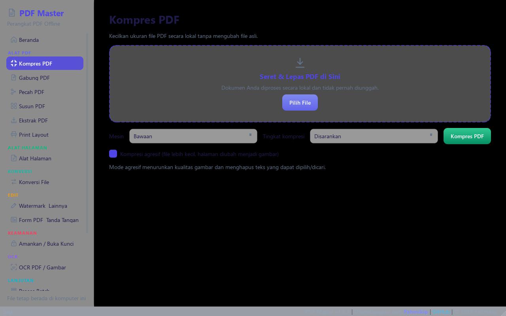
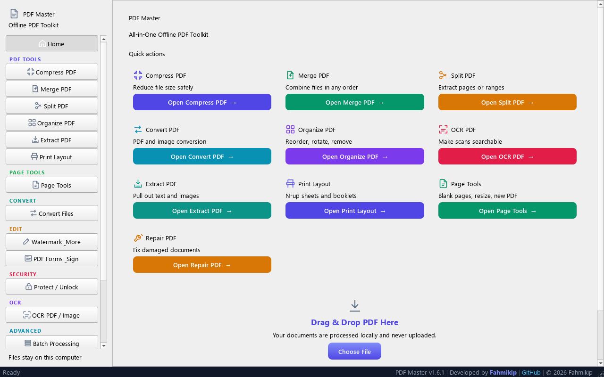

01 / OPTIMIZE↘
Kompres dengan kendali.
Pilih tingkat kompresi sesuai kebutuhan. Simpan hasil sebagai file baru dan bandingkan ukurannya sebelum membagikan.
laporan-kuartal.pdfDokumen Anda18.4 MB
laporan-kuartal-small.pdfHasil kompresi− 62%
Kompres, edit, gabungkan, dan konversi dokumen tanpa mengirimkannya ke situs yang tidak Anda kenal. Satu aplikasi desktop, siap menemani alur kerja Anda.
Semua alat PDF di satu tempat.
Dari tugas sederhana sampai pekerjaan dokumen harian, alat yang Anda perlukan sudah tersedia di desktop.
Pilih tingkat kompresi sesuai kebutuhan. Simpan hasil sebagai file baru dan bandingkan ukurannya sebelum membagikan.
Gabungkan, pecah, susun ulang, putar, atau hapus halaman dengan beberapa klik.
Ubah gambar ke PDF, ekspor PDF ke gambar, Word, atau Excel langsung dari komputer.
Lindungi dokumen dengan kata sandi, isi formulir, tambahkan tanda tangan dan watermark.

PDF sering menyimpan informasi sensitif: data pelanggan, nomor identitas, tanda tangan, rincian keuangan, komentar, hingga metadata. Saat file diunggah ke layanan kompresi yang tidak dikenal, Anda menyerahkan salinan dokumen kepada pihak lain.
Salinan dapat tersimpanKebijakan retensi dan penghapusan berbeda di setiap layanan.
Isi dokumen bisa tereksposTautan, akun, atau sistem penyedia yang lemah dapat membuka peluang akses tak berizin.
Anda kehilangan kendaliKetentuan penggunaan bisa mengatur bagaimana file diproses dan disimpan.
Untuk dokumen sensitif, pilih pemrosesan lokal.PDF Master memproses file di komputer Anda. Isi dokumen tidak perlu dikirim ke server kompresi.
Temukan alat dengan cepat, lihat hasil dengan jelas, lalu lanjutkan pekerjaan Anda. Tanpa akun dan tanpa alur unggah yang berbelit.
Lihat proyek di GitHub ↗
Unduh aplikasi gratis dari rilis resmi PDF Master.
Operasi PDF berlangsung lokal di komputer. Pemeriksaan pembaruan opsional menghubungi GitHub untuk informasi versi; dokumen Anda tidak dikirim.
Ya. PDF Master adalah perangkat lunak open source di bawah lisensi MIT. Anda dapat membaca kode sumbernya di GitHub.
Unduh dari halaman GitHub Releases resmi yang ditautkan di sini. Rilis menyediakan checksum SHA-256 untuk memeriksa file yang diunduh.
Fitur utama berjalan tanpa alat tambahan. LibreOffice untuk konversi Office ke PDF, Tesseract untuk OCR, dan Ghostscript untuk kompresi tertentu bersifat opsional.